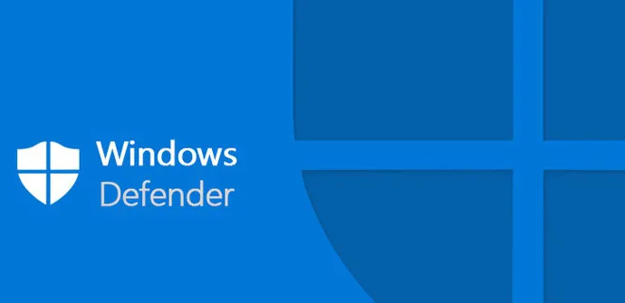

Una de las principales críticas que reciben los sistemas operativos Windows es la debilidad del sistema en lo que a seguridad se refiere y el alto índice de vulnerabilidades críticas. El propio Bill Gates, fundador de Microsoft, ha asegurado en repetidas ocasiones que la seguridad es objetivo primordial para su empresa.
Partiendo de la base de que no existe un sistema completamente libre de errores, las críticas se centran en la lentitud con la que la empresa reacciona ante un problema de seguridad que pueden llegar a meses o incluso años de diferencia desde que se avisa de la vulnerabilidad hasta que se publica un parche.
En algunos casos la falta de respuesta por parte de Microsoft ha provocado que se desarrollen parches que arreglan problemas de seguridad hechos por terceros.
Uno de los pilares en que se basa la seguridad de los productos Windows es la seguridad por ocultación, en general, un aspecto característico del software propietario que sin embargo parece ser uno de los responsables de la debilidad de este sistema operativo ya que, la propia seguridad por ocultación, constituye una infracción del principio de Kerckhoff, el cual afirma que la seguridad de un sistema reside en su diseño y no en una supuesta ignorancia del diseño por parte del atacante.
Permisos De Archivos
En todas las versiones de Windows con NT 3 se han basado en un sistema de permisos de sistema de archivos denominado AGDLP (cuentas, Global, Local, permisos) AGLP que en esencia donde se aplican los permisos de archivo a la carpeta en forma de un grupo local que luego tiene otros 'grupos globales' como miembros. Estos grupos globales mantienen otros grupos o a usuarios según las diferentes versiones de Windows que utiliza. Este sistema varía de otros productos de proveedores tales como Linux y NetWare debido a la 'estática' asignación de permiso se aplica directorio para el archivo o carpeta. Sin embargo con este proceso de AGLP/AGDLP/AGUDLP permite a un pequeño número de permisos estáticos para aplicarse y permite cambios fáciles a los grupos de cuentas sin volver a aplicar los permisos de archivo de los archivos y carpetas.
Windows defender
El 6 de enero de 2005, Microsoft lanzó una versión Beta de Microsoft AntiSpyware, basado en Giant AntiSpyware publicado anteriormente. El 14 de febrero de 2006, Microsoft AntiSpyware se convirtió en Windows Defender con el lanzamiento de la Beta 2. Windows Defender era un programa diseñado para proteger contra spyware y otro software no deseado. Los usuarios de Windows XP y Windows Server 2003 que tienen copias originales de Microsoft Windows pueden descargar libremente el programa desde el sitio web de Microsoft y Windows Defender se suministra como parte de Windows Vista y 7. Windows Defender y Microsoft Security Essentials se han combinado en un solo programa, denominado Windows Defender. Sus características y la interfaz de usuario se basan en Microsoft Security Essentials. Así mismo, Windows Defender se transformó en un programa antivirus y Spyware. A pesar de que está activada de forma predeterminada, se puede desactivar para utilizar otra solución antivirus.

Caracteristicas Principales
Windows Defender puede analizar capacidades similares a otros productos libres en el mercado e incluye un número de agentes de seguridad en tiempo real que vigilan varias áreas comunes de Windows para los cambios que pueden ser causados por el software espía. También incluye la capacidad de eliminar fácilmente aplicaciones ActiveX instaladas en Internet Explorer. También integró el apoyo a la red de SpyNet de Microsoft, permitiéndole a los usuarios informar a Microsoft de posibles ataques de software espía, y que los controladores de dispositivos y aplicaciones pueden instalarse en sus computadores.